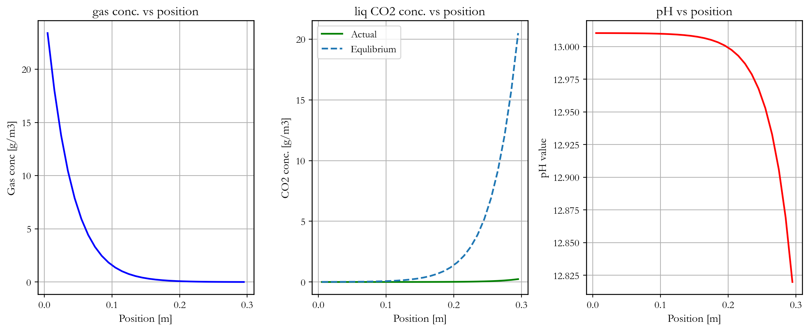
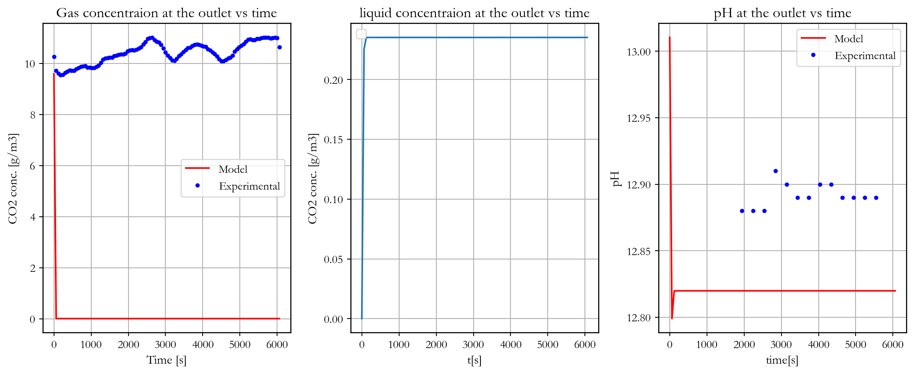
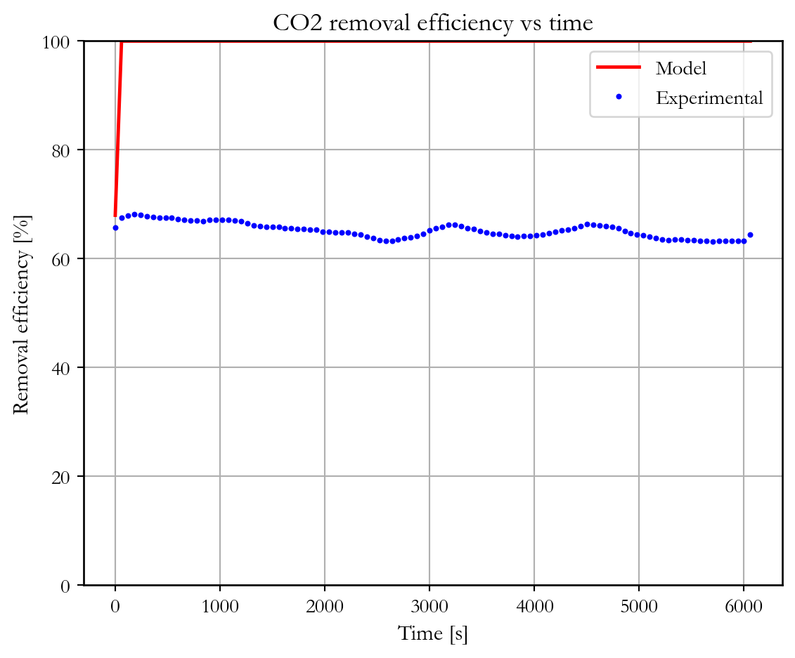

"""
Model validation with experimental data
The pH in the reservoir was
"""
import numpy as np
import pandas as pd
# import the data
data = pd.read_csv(
r"C:\tbr\BSc-proj-Alsheghri-2026-tbr\laboratory\09_04_2026_co2_measurements.csv",
sep=';'
)
data['Timestamp'] = pd.to_datetime(data['Timestamp'])
# start and end for the inlet measurment
start = "2026-04-09 10:16:41"
end = "2026-04-09 10:21:41"
# extract all the values in the interval
inlet = data[(data["Timestamp"] >= start) & (data["Timestamp"] <= end)]
# mean inlet conc.
inlet_conc = inlet['SCD30_CO2'].mean() # this is the diluted value, the real value is calculated using the dilution factor
Q_gas_bund = 0.387 # L/min
Q_air_mix = 2.8 # L/min
# Before the dilution
inlet_conc_actual = float((Q_gas_bund+Q_air_mix) / Q_gas_bund * inlet_conc) # ppm
# oulet concentrations
start_out = "2026-04-09 10:27:41"
end_out = "2026-04-09 12:08:41"
outlet = data[(data["Timestamp"] >= start_out) & (data["Timestamp"] <= end_out)]
Q_gas_top = 0.398 # L/min
Q_air_mix = 3.0705 # L/min
# actual outlet conc.
outlet_conc = outlet['SCD30_CO2'] * (Q_gas_top + Q_air_mix)/Q_gas_top # ppm
temp = 22.0 # Celcius
pres = 1.0 # bar
M_co2 = 44.009 # g/mol
R = 8.314e-5 # m3 * bar / K-mol
outlet_conc_gm3 = pres/(R*(temp+273.15)) * outlet_conc/10**6 * M_co2
outlet_times = outlet["Timestamp"]
t0 = outlet_times.iloc[0]
outlet_t_sec = (outlet_times - t0).dt.total_seconds().to_numpy()
# pH data
time = ["11:00", "11:05", "11:10", "11:15", "11:20", "11:25", "11:30",
"11:35", "11:40", "11:45", "11:50", "11:55", "12:00"]
pH = [12.88, 12.88, 12.88, 12.91, 12.90, 12.89, 12.89, 12.90, 12.90, 12.89, 12.89, 12.89, 12.89]
pH_data = pd.DataFrame({
"time": time,
"pH" : pH
})
pH_data["Timestamp"] = pd.to_datetime(
"2026-04-09 " + pH_data["time"]
)
t0 = outlet_times.iloc[0]
pH_data["t_sec"] = (pH_data["Timestamp"] - t0).dt.total_seconds()
# experimental removal efficiency
removal_efficiency_experimental = (inlet_conc_actual - outlet_conc)/inlet_conc_actual * 100
# Time variable cgin
# inlet_times = inlet['Timestamp']
# inlet_t_sec = (inlet_times - t0).dt.total_seconds().to_numpy()
# inlet_conc_actual_ppm = inlet['SCD30_CO2'] * (Q_gas_bund + Q_air_mix) / Q_gas_bund
# inlet_conc_actual_gm3 = pres/(R*(temp+273.15)) * inlet_conc_actual/1e6 * M_co2
# # now buld the cgin dataframe wich the rates can use to interpolate
# cgin_df = pd.DataFrame({
# "time" : inlet_t_sec,
# "inlet_conc" : inlet_conc_actual_gm3
# })
import matplotlib.pyplot as plt
import mods.mod_co2_main as md
import importlib
import matplotlib as mpl
importlib.reload(md)
def modelrun(Q_g = 10,
Q_l = 350,
D = 0.19,
pH = 13.7,
vres = 20,
times = outlet_t_sec,
frac_co2 = 0.05,
Kga = 'onda',
counter=True,
recirc=True,
enh_method='PFO',
constant_res_pH = True):
"""
A function for model running
units of arguments:
Q_g L/min
Q_l mL/min
"""
#========= fixed parameters ==========#
L = 0.3 # m
por_g = 0.91
por_l = 0.05
ssa = 260 # m2/m3
nc = 30
cg0 = 9.59
cl_co20 = 0.0
cl_TOTC0 = 0.0
clin_co2 = 0.0
clin_TOTC = 0.0
cr_co20 = 0.0
cr_TOTC0 = 0.0
henry = [3.3e-2, 2400]
temp = 22.0 # Celcius
dens_l = 997.0 # kg/m3
pres = 1.0 # bar
M_co2 = 44.009 # g/mol
R = 8.314e-5 # m3 * bar / K-mol
# ================= Derived values =================
ex_oh = 10**(-(14-pH)) * 1000 # mol/m3
# cross sectional area of the reactor
A = (np.pi*D**2)/4 # m2
# flow velocity using flow rate and area
v_g = (Q_g * 1/1000 * 1/60) / A # L/min * 1m3/1000L * 1min/60s = m3/s
v_l = (Q_l * 1/10**6 * 1/60) / A # mL/min * 1m3/10^6mL * 1min/60s = m3/s
Kga = Kga
# 0.023
v_res = vres/1000/A
cgin = pres / ((temp + 273.15) * R) * frac_co2 * M_co2 # g/m3
# cgin = cgin_df
results = md.tfmod(
L, por_g, por_l, v_g, v_l, nc,
cg0, cl_co20, cl_TOTC0,
cgin, ex_oh,
clin_co2, clin_TOTC,
cr_co20, cr_TOTC0,
Kga, henry, temp, dens_l,
times,
kg='onda',
kl='onda',
ae='onda',
v_res=v_res,
pres=pres,
ssa=ssa,
typ='PR',
counter=counter,
recirc=recirc,
enh_method=enh_method,
constant_res_pH = constant_res_pH
)
return results, cgin
def result_processing(res, cgin, outlet_conc_lab, removal_efficiency_experimental, label):
"""
A function for result processing
"""
# ===== extract the results ====== #
gas = res[ 'gas_conc' ]
liq = res['co2_liq_conc' ]
TOTC = res['TOTC_liq_conc']
eq = res[ 'eq_conc' ]
pH = res[ 'pH_profile' ]
TOTC_eq = res[ 'TOTC_eq' ]
x = res[ 'cell_pos' ]
t = res[ 'time' ]
counter = res['inputs']['counter']
recirc = res['inputs']['recirc']
m_gin = res['m_gin'] # gas mol/s coming in
m_gout = res['m_gout'] # gas mol/s coming out
m_lout = res['m_lout'] # liq mol/s coming out
m_tout = res['m_tout'] # tot mol/s coning out (m_gout + m_lout)
# outlet hanling
gas_outlet = gas[-1,:]
if counter:
liq_outlet = liq[0,:]
pH_outlet = pH[0,:]
else:
liq_outlet = liq[-1,:]
pH_outlet = pH[-1,:]
# ========= results processing =============
gas_inlet = float(cgin)
gas_out_initial = gas_outlet[0]
gas_out_final = gas_outlet[-1]
removal_eff_final = 100 * (gas_inlet - gas_out_final) / gas_inlet
removal_eff_vs_t = 100 * (gas_inlet - gas_outlet) / gas_inlet
pH_initial = pH_outlet[0]
pH_final = pH_outlet[-1]
mass_balance = m_tout - m_gin
# gas concnetration in ppm
temp = 25.0 # Celcius
pres = 1.0 # bar
R = 8.314e-5 # m3 * bar / K-mol
M_co2 = 44.009 # g/mol
gas_out_final_ppm = (gas_out_final/M_co2 * ( (temp+273.15)*R / pres)) * 10**6
gas_inlet_ppm = (gas_inlet/M_co2 * ( (temp+273.15)*R / pres)) * 10**6
# Root mean squared error
RMSE = np.sqrt(np.mean((gas_outlet-outlet_conc_lab)**2))
# Mean absolut error
MAE = np.mean(np.abs(gas_outlet-outlet_conc_lab))
# Mean bias error
MBE = np.mean(gas_outlet-outlet_conc_lab)
# ===== print results ========
print(f'\n===== {label} ======\n')
print(f"\nGas inlet CO2 : {gas_inlet:.2f} g/m3")
print(f"Gas inlet ppm : {gas_inlet_ppm:.2f}")
print(f"Gas outlet initial : {gas_out_initial:.2f} g/m3")
print(f"Gas outlet final : {gas_out_final:.2f} g/m3")
print(f"Gas outlet final in ppm : {gas_out_final_ppm:.2f}")
print(f"Final CO2 removal efficiency : {removal_eff_final:.2f} %")
print("\n--- pH ---")
print(f"Initial pH : {pH_initial:.3f}")
print(f"Final pH : {pH_final:.3f}")
print("\n======================================\n")
# print("\n====== Mass balance =======")
# print(f'Gas in :{m_gin} mol/s')
# print(f'Gas out :{m_gout} mol/s')
# print(f'liquid out :{m_lout} mol/s')
# print(f'Mass balance :{mass_balance}')
print("\n====================================\n")
print(f'The RMSE is {RMSE:.4f}')
print(f'The MBE is {MBE:.4f}')
print("\n====================================\n")
# ================ flip for counter-current ================
if counter:
liq_plot = liq[::-1,:]
pH_plot = pH[::-1,:]
eq_plot = eq[::-1,:]
TOTC_plot = TOTC[::-1,:]
TOTCeq_plot = TOTC_eq[::-1,:]
else:
liq_plot = liq
pH_plot = pH
eq_plot = eq
TOTC_plot = TOTC
TOTCeq_plot = TOTC_eq
# =================== plot style =====================
mpl.rcParams['font.family'] = 'serif'
mpl.rcParams['font.serif'] = ['Garamond']
mpl.rcParams['axes.linewidth'] = 1
mpl.rcParams['axes.labelsize'] = 12
mpl.rcParams['axes.titlesize'] = 14
mpl.rcParams['xtick.labelsize'] = 11
mpl.rcParams['ytick.labelsize'] = 11
mpl.rcParams['legend.fontsize'] = 11
# ================= position profile =================
plt.figure(figsize=(12, 5))
plt.subplot(1,3,1)
plt.title('gas conc. vs position')
plt.plot(x, gas[:,-1], 'b-', linewidth = 1.8)
plt.ylabel('Gas conc [g/m3]')
plt.xlabel('Position [m]')
plt.ticklabel_format(style='plain', axis='y', useOffset=False)
plt.grid()
plt.subplot(1,3,2)
plt.title('liq CO2 conc. vs position')
plt.plot(x, liq_plot[:,-1], 'g-', label = 'Actual', linewidth = 1.8)
plt.plot(x, eq_plot[:,-1], '--', label = 'Equlibrium', linewidth = 1.8)
plt.ticklabel_format(style='plain', axis='y', useOffset=False)
plt.ylabel('CO2 conc. [g/m3]')
plt.xlabel('Position [m]')
plt.legend()
plt.grid()
plt.subplot(1,3,3)
plt.title('pH vs position')
plt.plot(x, pH_plot[:,-1], 'r-', linewidth = 1.8)
plt.ticklabel_format(style='plain', axis='y', useOffset=False)
plt.ylabel('pH value')
plt.xlabel('Position [m]')
plt.grid()
plt.tight_layout()
plt.show()
# =============== time plots ======================
plt.figure(figsize=(12, 5))
plt.subplot(1,3,1)
plt.title('Gas concentraion at the outlet vs time')
plt.plot(t, gas_outlet, 'r-', label = "Model")
plt.plot(t, outlet_conc_lab, 'bo', label = "Experimental", markersize = 3 )
plt.ylabel('CO2 conc. [g/m3]')
plt.xlabel('Time [s]')
plt.legend()
plt.grid()
plt.subplot(1,3,2)
plt.title('liquid concentraion at the outlet vs time')
plt.plot(t, liq_outlet)
plt.ylabel('CO2 conc. [g/m3]')
plt.xlabel('t[s]')
plt.legend()
plt.grid()
plt.subplot(1,3,3)
plt.title('pH at the outlet vs time')
plt.plot(t, pH_outlet, 'r-', label = "Model")
plt.plot(pH_data["t_sec"], pH_data["pH"],'bo', label="Experimental", markersize = 3)
plt.ylabel('pH')
plt.xlabel('time[s]')
plt.legend()
plt.grid()
plt.tight_layout()
plt.show()
# ================= TOTC =====================
# plt.figure(figsize=(6,5))
# plt.title('TOTC vs position')
# plt.plot(x, TOTC_plot[:,-1], label='Actual')
# plt.plot(x, TOTCeq_plot[:,-1], '--', label='Equilibrium')
# plt.ylabel('TOTC [mol/m3]')
# plt.xlabel('Position [m]')
# plt.legend()
# plt.grid()
# plt.tight_layout()
# plt.show()
# =================== Removal efficiency =========================
plt.figure(figsize=(6,5))
plt.title('CO2 removal efficiency vs time')
plt.plot(t, removal_eff_vs_t, 'r-', linewidth=1.8, label = 'Model')
plt.plot(t,removal_efficiency_experimental,'bo', label = 'Experimental', markersize = 2)
plt.ylabel('Removal efficiency [%]')
plt.xlabel('Time [s]')
plt.ylim(0, 100)
plt.grid()
plt.legend()
plt.tight_layout()
plt.show()
# There is one msitake in the model and it is pH, it is shifted upwards with 0.096
# this means if you want pH = 13 you have to set it to 12.904, this should be fixed in the model.
frac_co2 = inlet_conc_actual/10**6
results, cgin = modelrun(Q_g = 10.84, Q_l = 505.4,
pH = 12.914, times = outlet_t_sec,frac_co2 = frac_co2,constant_res_pH=True,
enh_method='PFO'
)
result_processing(results,cgin, outlet_conc_gm3,removal_efficiency_experimental,'Lab')
===== Lab ======
Gas inlet CO2 : 29.95 g/m3
Gas inlet ppm : 16869.19
Gas outlet initial : 9.59 g/m3
Gas outlet final : 0.00 g/m3
Gas outlet final in ppm : 2.64
Final CO2 removal efficiency : 99.98 %
--- pH ---
Initial pH : 13.010
Final pH : 12.820
======================================
====================================
The RMSE is 10.3651
The MBE is -10.3122
====================================

C:\Users\osman\AppData\Local\Temp\ipykernel_25548\2455575311.py:360: UserWarning: No artists with labels found to put in legend. Note that artists whose label start with an underscore are ignored when legend() is called with no argument.
plt.legend()
